Ball Spin in Pro Tennis¶
John Yandell¶
The first ever study of spin levels in professional tennis yielded many surprising results.
[The two primary characteristics of the shots hit in professional tennis are that they are hit with great velocity and heavy spin.] Because of the radar guns on the serve, at least something was known quantitatively about the velocity of the ball.
The study of ball speed conducted by Advanced Tennis researchers showed that the radar guns told only the first part of the story about ball speed in pro tennis. We found that the ball slows down dramatically on the serve from the initial velocity recorded by the radar gun, both before and after the bounce, and did the same on the other shots as well.
Questions Regarding Spin
A first serve might be traveling 120mph when it left the racket, but how fast was that serve spinning? How much more spin was there on a "spin" second serve compared to a first serve? What about the heavy topspin forehands of the European players? How did this compare with players with a more classic style? How "flat" was a flat ball? How "heavy" was heavy or exaggerated spin? Did balls hit with underspin spin more or less than topspin? What about volleys and dropshots?
In 1997, we got the chance to answer some of these questions. Working with a team of other researchers from Cislunar Aerospace, and USTA Sports Science, we had the unique opportunity to film U.S. Open on Arthur Ashe Stadium court.
During 4 days of filming, we were lucky to capture enough footage to measure the spin rates on almost twenty of the top players in the world, both men and women. From the raw data, we were able to analyze the spin on over 700 individual shots, including 1st and 2nd serves, groundstrokes hit with both topspin and underspin, return of serves, volleys, overheads and drop shots.
That data documents the amazing spin rates generated by the top players for the first time, including the substantial amount of spin generated by those players generally described as hitting the ball "flat."
In fact the analysis showed that in pro matches there is virtually no such thing as a completely "flat" shot, or a ball hit with no visible spin. In hundreds of incidents, there were less than a half dozen shots that had no discernable rotation, most of which were miss hits.
The answers we discovered to our questions regarding spin surprised even some very experienced observers of the game. Even so-called flat groundstrokes were spinning at 1000rpm and up, and the forehands of some of the European and South American players could exceed 3000rpm. First serves could reach 2500rpm and above. Second serves were easily the faster spinning of all, reaching over 5000rpm. It was also fascinating to see where the game's top stars fell in the range of spin measured on center court.

We found there is no such thing as a "flat" pro forehand--spin rates were measured in thousands of rpms.
Spin and Technical Style
With a few exceptions, our findings matched the perception of expert observers concerning the relative amount of spin hit by the players, for example, that Sergi Bruguera hit more topspin than Pete Sampras. What surprised us most was the amount of spin hit by all the players, even among the more "classical" players. Of the players studied, American Mary Jo Fernandez, with her minimalistic, classic strokes, hit the "flatest" forehand. But her ball was still spinning on average in excess of 1000rpm! (To be precise, her average was 1068rpm on 12 forehands.)
At the other end of the spectrum was the Spanish player Sergi Bruguera, who generated topspin at an incredible rate that averaged over 3300rpm, more than 3 times as much spin of Mary Jo. Bruguera' also recorded the single fastest spinning forehand, an amazing 3751rpms in a match against Marcelo Rios.
In men's pro tennis it normally takes around a second for the ball to travel from one player's racket to the other in a baseline exchange. In the case of Sergi Bruguera's forehand, this means the ball is turning over itself 70 to 80 times as it travels to his opponent! Try visualizing a tennis ball turning over 80 times in one second as it travels from baseline to baseline, if you want to get a sense of what this is really like!

Sampras had more spin on his forehand than the other classical players, and slightly more than Andre Agassi as well.
These extremes--from Fernandez to Bruguera--defined the parameters of spin on the forehand in pro tennis, roughly from about 1000rpm to over 3000rpm, a range of more than 2000rpm, depending on the player and the type of forehand.
Men's Topspin Forehands
On the men's side, the players with the classical grips averaged roughly 1300 to 1800rpm. This included players such as Petr Korda and Tim Henman, known as compact technical players, and also Todd Martin. Interestingly Pete Sampras hit the most spin on the forehand among players with classical style, an average of 1842rpm. Andre Agassi's forehand actually measured slightly less spin than Sampras, despite his semi-western grip, averaging 1718rpm.
[The highest spin measured on a groundstroke was Bruguera's forehand at over 3700rpm.]
Men players with the more extreme western grips all hit with substantially more average topspin, with the averages starting well above 2000rpm. This range began with Michael Chang at 2334rpm, Marcelo Rios at 2647rpm, and Tomas Muster at 2882rpm. Sergi Bruguera, who observers agree has the most extreme western motion in tennis, was at a level by himself, the only player averaging well in excess of 3000rpm.
Topspin Men's Forehands
Player: No. of Forehands: RPM Range: Avg RPM: Sergi Bruguera 9 2941-3751rpm 3331rpm
Tomas Muster 22 1500-3750rpm 2882rpm
Marcelo Rios 13 1875-3750rpm 2647rpm
Mark Philippousis 8 2143-2727rpm 2546rpm
Jim Courier 12 938-3264rpm 2527rpm
Michael Chang 17 1271-3192rpm 2334rpm
Pete Sampras 17 1000-3409rpm 1842rpm
Andre Agassi 19 1154-3333rpm 1718rpm
Todd Martin 5 1154-2308rpm 1659rpm
Tim Henman 7 833-2000rpm 1288rpm
Petr Korda 15 968-2500rpm 1333rpm
Women's Topspin Forehands

Venus Williams was the only woman to top 2000rpm on her forehand.
The range between the high and low on the women's side was less extreme, but still in excess of 1000rpm. Mary Jo Fernandez, as noted, was at the low end at 1068rpm. [Venus Williams was the only player to average in excess of 2000rpm, averaging 2154rpm.]
The players with classical grips such as Jana Novotna and Lindsey Davenport were in the same range as their male counterparts between 1000rpm and 2000rpm, with Davenport at 1346rpm and Novotna at 1673rpm. Players with the more extreme grips such as Mary Pierce and Arantxa Sanchez-Vicario averaged around1900rpm, 1941 and 1916rpm respectively.
Despite a semi-western grip world #1 Martina Hingis hit less spin than every player other than Fernandez, averaging 1147rpm. Another interesting result was that Monica Seles, who hits her forehand with two-hands, had one of the relatively "flatest" forehands at an average of 1215rpm.
Topspin Women's Forehands
Player: No. of Forehands: RPM Range: Avg RPM: Venus Williams 16 1071-3488rpm 2154rpm
Mary Pierce 5 1667-2500rpm 1941rpm
Arantxa Sanchez-V. 3 1875-2000rpm 1916rpm
Anna Kournikova 16 1154-2143rpm 1713rpm
Jana Novotna 5 1500-1875rpm 1673rpm
Lindsay Davenport 13 1271-3192rpm 1346rpm
Monica Seles (2H) 12 790-1829rpm 1215rpm
Martina Hingis 15 600-2143rpm 1147rpm
Mary Jo Fernandez 12 417-1500rpm 1068rpm
Spin on The Backhand
In general the top players hit their backhands with significantly less topspin compared to their forehands with some interesting exceptions, including Pete Sampras as noted below.
As with the forehand, on the men's side Sergi Bruguera was the king of topspin on the backhand with his 2-handed shot. His average was 2382rpm, but this was still almost 1000rpm, or 30% less than his topspin forehand.
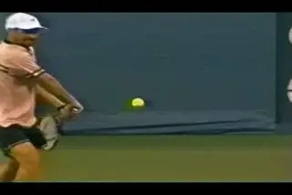
Among the men, Agassi's spin rates were balanced on both sides.
Interestingly among the men, 3 of the 4 highest spin rates were players who hit with 1-hand rather than 2. This was surprising because it is widely considered more difficult to generate topspin with a one-handed shot. Tomas Muster, for example, averaged 2264rpm with his one-handed shot, second only to BrugueraUs two hander. Still, this was 20% less topspin than his forehand.
Pete Sampras was unique among all the players, both men and women, in that he hit significantly more topspin on his backhand drive compared to his forehand. His average of 2204rpm was the third highest we recorded, and 20% higher than his forehand topspin average of 1842rpm. Although not among the leaders in spin rate, Petr Korda, known for his exceptional 1-handed backhand, averaged 1553rpm on that shot, a little more than 10% more topspin than his forehand.
Andre Agassi was an exception among the players because of the even balance between sides, hitting the ball with virtually identical amounts of topspin on the backhand as the forehand. Agassi averaged 1754rpm on the backhand, compared to 1718rpm on the forehand.
Men's Topspin Backhands
Player: Type No. of Backhand RPM Range: Avg RPM: Sergi Bruguera 2H 6 1667-3000rpm 2382rpm
Tomas Muster 1H 6 1500-3333rpm 2264rpm
Pete Sampras 1H 8 1875-2830rpm 2204rpm
Mark Philippousis 1H 3 1667-2419rpm 2029rpm
Andre Agassi 2H 14 790-2500rpm 1754rpm
Jim Courier 2H 4 1000-2143rpm 1606rpm
Petr Korda 1H 9 833-2727rpm 1553rpm
Michael Chang 2H 11 1154-2055rpm 1437rpm
Todd Martin 2H 1 1304rpm 1304rpm
Marcelo Rios 2H 2 833-1765rpm 1299rpm
Tim Henman 1H 1 1250rpm 1250rpm
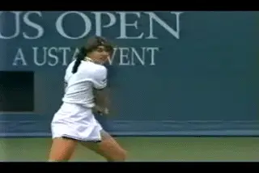
Like Agassi, Hingis had balanced spins on both sides, but lower total rates than most other women.
Women's Backhands
Many women also showed substantial decreases in the amount of topspin hit on the backhand, compared to the forehand. Venus Williams hit the most spin of the women studied, at 1429rpm, but this was also significantly less, about a third less spin, than on her forehand. Anna Kournikova was even more extreme. Her backhands averaged 999rpm, about 60% less spin than her forehand at 1713rpm.
On the women's side, however, there were more players with equal spin rates on both sides. Lindsay Davenport averaged 1332rpm on the backhand, versus 1346rpm on the forehand. Monica Seles was only slightly higher on the backhand at 1321rpm compared to her forehand at 1215rpm. Martina Hingis backhand averaged 1147rpm, which exactly equalled her forehand statistical average.
Women's Topspin Backhands
Player: Type No. of Backhand RPM Range: Avg RPM: Venus Williams 2H 8 1000-1875rpm 1429rpm
Lindsay Davenport 2H 5 882-1875rpm 1332rpm
Monica Seles 2H 9 938-2143rpm 1321rpm
Mary Pierce 2H 4 938-1875rpm 1316rpm
Arantxa Sanchez-V. 2H 2 938-1500rpm 1219rpm
Martina Hingis 2H 15 600-1667rpm 1147rpm
Anna Kournikova 2H 8 535-1500rpm 999rpm
Mary Jo Fernandez 2H 10 375-1304rpm 790rpm
The spin rates on underspin backhands were generally higher than the topspin versions.
Underspin Backhands
Most of the top players we filmed, both men and women, drove the ball with topspin on their backhands whenever possible. However, players employed slice or underspin in various situations, for defense, or for approach shots to keep the ball low when going to the net.
Physicist Howard Brody has pointed out that generating slice requires only about half the racket head speed compared to hitting topspin, because the player is not required to change the direction in which the ball is spinning. The oncoming ball bounces off the court with topspin, spinning from top to bottom as it comes toward the player. When a player returns the ball with a slice shot the direction in which the ball spins around the axis of rotation is maintained. The direction of the shot changes, but the ball continues to spin from top to bottom, from the player's perspective as it moves away from the player.
For this reason, it was not surprising to find that in general players hit their slice backhands with more outgoing spin than their topspin backhands. The topspin range for the men's players was 1250rpm to 2382rpm, while the slice shots for 10 different players averaged from 2127rpm to 3244rpm.
On the men's side, Jim Courier for example, hit 2 slice shots that averaged 3244rpm, more than twice the spin of his 2-handed topspin, which averaged 1606rpm. Michael Chang was a similar case. We measured 3 Chang slice backhands that averaged 2813rpm, again roughly twice the spin as on his two-handed topspin shot.
Men's Underspin Backhands
Player: No. of Backhand RPM Range: Avg RPM: Jim Courier 2 3000-3488rpm 3244rpm
Michael Chang 3 2586-3125rpm 2813rpm
Todd Martin 2 2500-3000rpm 2750rpm
Andre Agassi 1 2727rpm 2727rpm
Sergi Bruguera 1 2726rpm 2726rpm
Mark Philippousis 3 2143-3333rpm 2659rpm
Tim Henman 6 1579-3000rpm 2398rpm
Tomas Muster 2 1875-2830rpm 2353rpm
Petr Korda 7 2143-2500rpm 2320rpm
Pete Sampras 3 1500-2500rpm 2127rpm
On the women's side we were able to record fewer examples, but the results were consistent with the men's. Possibly because of the reduced racket head speed required, the women seemed capable of generating as much slice as the men players. Jana Novotna, known for her one-handed slice backhand, recorded the highest underspin rate of any player, with two hits that averaged 3375rpm. 3 other slice backhands recorded by 3 different players averaged 2298rpm. This was more than a third more spin than the topspin backhands hit by Venus Williams, who led the women with an average of 1429rpm when she hit with topspin.
Women's Underspin Backhands
Player: No. of Backhand RPM Range: Avg RPM: Jana Novotna 2 3000-3750rpm 3375rpm
Irena Spirlea 1 2727rpm 2727rpm
Monica Seles 1 (2H) 2500rpm 2500rpm
Mary Jo Fernandez 1 1667rpm 1667rpm
Sampras had the highest combination of speed and spin--around 120mph and over 2500rpm.
The Men's Serve
Even more than the groundstrokes, the serve is often described in terms of spin as being hit "flat" or with "topspin" or "slice". Our study shows that the only meaningful use of these terms is a relative one. There is no such thing as a "flat serve" in tennis. On the first serve, most players that we studied generated more spin than on either of their groundstrokes, and the second serve yielded the highest spin rates in the game.
The lowest average spin rates on the first serve were 1600-1700rpm. Michael Chang, for example, hit 7 first serves with an average speed of 112mph and and an average spin rate of 1677rpm. 8 of the 10 men studied averaged well spin of well over 2000rpm on their first serves.
Pete Sampras, known for having one of the best serves in pro tennis, hit 11 first serves with an average radar gun velocity of 120mph and and an average spin rate of 2699rpm, easily the highest combination of ball spin and ball speed tested.
Men's First Serve
Player: No. of Serves: Avg MPH: RPM Range: Avg RPM: Marcelo Rios 2 92mph 3000-3333rpm 3167rpm
Jim Courier 6 108mph 2500-4054rpm 2842rpm
Todd Martin 7 98mph 1667-3947rpm 2798rpm
Tomas Muster 8 105mph 1667-4284rpm 2754rpm
Pete Sampras 11 120mph 2100-4260rpm 2699rpm
Petr Korda 7 101mph 1579-3750rpm 2688rpm
Andre Agassi 9 102mph 1200-4284rpm 2449rpm
Mark Philippousis 3 123mph 1765-2830rpm 2198rpm
Michael Chang 7 112mph 1000-3750rpm 1677rpm
Tim Henman 2 120mph 1429-1667rpm 1548rpm
The Combination of Speed and Spin
We determined from our ball speed study that on a serve hit at 120mph, it takes roughly 2/3's of a second for the ball to travel from the server's racket to the racket of the returner. This means that a typical Sampras serve turned over about 30 times in the fraction of a second it takes to travel across the length of the court!
Sampras's ability to generate both velocity and spin on his first serve may explain his ability to serve with such great consistency and effectiveness, particularly under pressure. (See the Sampras Serve series. )
Petr Korda and Tomas Muster, for example, generated averaged roughly the same amount of spin as Sampras on their first serves, ie, 2600 to 2700rpm, but each averaged speeds of only slightly more than 100mph. In our data, Michael Chang's personal highest first serve velocity was 122mph, but the spin rate on this serve was only 1071rpm, well less than half of the spin Sampras achieved on serves of similar speed. Andre Agassi's fastest recorded serve was 121mph and this serve came the closest to flat of any serve studied spinning at less than 300rpms.
Spin on the Second Serve
The fastest spinning shot in pro tennis was the second serve. Average spin rates on the second serves among the men all exceeded even the average spin rate of Sergi Bruguera's forehand (3351rpm), ranging from a low of 3370rpm for Todd Martin to a high of 4650rpm for Andre Agassi.
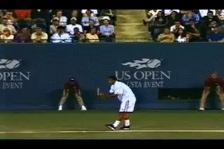
Sampras Second Serve
Sampras's average second serve spin rate (4623rpm) was nearly identical to Agassi's. However, he achieved more than 10mph in additional second serve velocity, averaging 85mph, compared to Agassi's 74mph. As with his first serve, Sampras's ability to generate both spin and speed on the second serve is a probable key in understanding his overall serving effectiveness.
Men's Second Serve
Player: No. of Serves: Avg MPH: RPM Range: Avg RPM: Andre Agassi 9 74mph 4054-4998rpm 4650rpm
Tim Henman 2 85mph 4284-4998rpm 4641rpm
Pete Sampras 4 85mph 3900-5357rpm 4623rpm
Tomas Muster 2 71mph 3750-4998rpm 4374rpm
Mark Philippousis 4 99mph 2830-4546rpm 4018rpm
Petr Korda 3 88mph 3750-4284rpm 4017rpm
Michael Chang 10 77mph 3125-4284rpm 3928rpm
Jim Courier 4 91mph 3571-4167rpm 3810rpm
Todd Martin 10 89mph 3000-4284rpm 3370rpm
Spin on Women's Serves
On the women's side, the overall picture was quite similar to the men. Of the 6 players studied, all but Mary Jo Fernandez averaged more spin on the first serve than on the forehand. Lindsay Davenport was the highest at 2678rpm averaged over 9 first serves, about twice the amount of spin as on her forehand. Venus Williams, known for having the most powerful first serve in women's tennis, averaged virtually the same spin rate as Davenport, 2598rpm, but also averaged slightly more velocity--94mph versus Davenport's average of 90mph.
Women's First Serve
Player: No. of Serves: Avg MPH: RPM Range: Avg RPM: Lindsay Davenport 9 90mph 1875-3488rpm 2678rpm
Venus Williams 8 94mph 624-3750rpm 2598rpm
Anna Kournikova 12 91mph 1250-3061rpm 2250rpm
Martina Hingis 5 --- 1000-3947rpm 2103rpm
Monica Seles 9 95mph 455-1579rpm 1287rpm
Mary Jo Fernandez 9 86mph 357-1579rpm 601rpm
On the second serve, 5 of the 7 women studied averaged over 3000rpm. Like the men, the second serve is the fastest spinning shot in the women's game. Venus Williams recorded the single fastest spinning serve at 4284rpm, averaging over 3600rpm for 8 serves, with an average radar gun reading of 79mph. Martina Hingis was close in terms of spin at an average of 3500rpm, but her second serves had less velocity, averaging 73mph over 7 deliveries.
Women's Second Serve
Player: No. of Serves: Avg MPH: RPM Range: Avg RPM: Jana Novotna 1 --- 3750rpm 2678rpm
Venus Williams 8 79mph 3000-4284rpm 3621rpm
Martina Hingis 7 73mph 3192-3750rpm 3500rpm
Arantxa Sanchez-V. 1 --- 3333rpm 3333rpm
Mary Pierce 3 --- 3000rpm 3000rpm
Monica Seles 12 77mph 1250-2727pm 2303rpm
Mary Jo Fernandez 5 74mph 882-1250rpm 1059rpm
In Part Two of this article we'll look at the rest of the shots in this first ever study: the return of serve, the volley, overhead and the drop shot. This seminal study was the groundwork for additional studies completed by Advanced Tennis researchers. Stay tuned for more of the story.
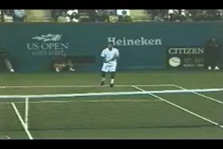
In general the returns in pro tennis are hit with less spin than the groundstrokes.
In the first article on our study of spin rates using high speed cameras, we looked at the results for groundstrokes and the serve. This article adds the data on returns and the net game to complete our picture of the amazing spin rates we found in world class tennis.
We also take a look at another surprising factor in generating spin--the bounce of the ball on the court. Again, we found something amazing. The friction of the bounce more than doubled the amount of spin already on the ball in the air, and converted it to pure topspin after the bounce, or something very close.
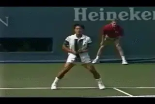
On the backhand return, Chang was the exception, hitting roughly the same amount of total spin as on his backhand.
Return of Serve
Although there were significant exceptions, our data showed that in general the top players hit their returns with less spin than their groundstrokes. During our filming we were able to record over 25 returns on the men's side and almost 40 on the women's. It makes sense that the returns would have less spin going out, because of the heavy spin on the incoming serve, particularly second serves. This spin had to be negated or reversed first, making generating out going spin more difficult than on incoming balls with less spin.
For some of the men, we found the spin rate was about the same as the forehand groundstroke. We filmed 4 Sampras forehand returns and found they were hit at similar spin rates to his regular forehand, averaging 1899rpm. But Andre Agassi and Michael Chang on the other hand recorded forehand returns that had half or less topspin compared to their groundstrokes.
Men's Forehand Return
Player: No. of Returns: RPM Range: Avg RPM: Sergi Bruguera 1 3751rpm 3751rpm
Marcelo Rios 1 2500rpm 2500rpm
Pete Sampras 4 1667-2055rpm 1899rpm
Michael Chang 1 1250rpm 1250rpm
Andre Agassi 3 600-833rpm 687rpm
Men's Forehand Returns versus Forehands
Player: Avg. FH Return RPM: Avg. FH RPM: Difference on Return: Sergi Bruguera 3751rpm 3331rpm +13%
Marcelo Rios 2500rpm 2647rpm -6%
Pete Sampras 1899rpm 1842rpm -3%
Michael Chang 1250rpm 2334rpm -46%
Andre Agassi 687rpm 1718rpm -60%
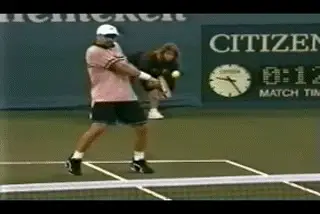
Agassi's returns on both sides were hit with about half as much spin as his groundstrokes.
Men's Backhand Return
The decrease in spin on the return was more dramatic on the backhand, although this was possibly due to the larger data pool--17 backhand returns versus 10 for the forehand return. Four Pete Sampras backhands averaged 1899rpm, about 14% less than on the forehand. 5 backhand returns from Andre Agassi again showed a far more dramatic decline, averaging 992rpm, or 43% less spin than his backhand groundstroke.
Player: No. of Returns: RPM Range: Avg RPM: Versus BH Pete Sampras 4 1667-2055rpm 1899rpm 2204rpm
Michael Chang 6 714-1579rpm 1219rpm 1437rpm
Andre Agassi 5 833-1200rpm 992rpm 1754rpm
Jim Courier 2 833-1071rpm 952rpm 1606rpm
Shot: Men's Backhand Returns versus Backhands
Player: Avg. BH Return RPM: Avg. BH RPM: Difference on Return: Pete Sampras 1899rpm 2204rpm -14%
Michael Chang 1219rpm 1437rpm -15%
Andre Agassi 992rpm 1754rpm -43%
Jim Courier 952rpm 1606rpm -41%
The tendency to hit with less spin on the returns was more pronounced for the women.
Spin on The Women's Returns
The tendency to hit with less spin on the return was more pronounced on the women's side. The women's data included more incidents than the men's: 21 forehand returns from 7 different players. With the exception of Martina Hingis who generated virtually the same amount of topspin on her forehand return as on her regular forehand, the other 6 players all showed substantial declines. Anna Kournikova for example, averaged 1038rpm on 8 forehand returns, versus 1713rpm for her forehand groundstroke. This equalled 37% less topspin.
Women's Forehand Return
Player: No. of Returns: RPM Range: Avg RPM: Mary Pierce 2 1304-1875rpm 1590rpm
Venus Williams 1 -- 1500rpm
Martina Hingis 3 938-1765rpm 1218rpm
Anna Kournikova 8 428-1429rpm 1083rpm
Monica Seles 2 (2H) 750-1071rpm 911rpm
Mary Jo Fernandez 3 341-790rpm 562rpm
Lindsay Davenport 2 395-682rpm 539rpm
Women's Forehand Return versus Forehand
Player: Avg. FH Return RPM: Avg. FH RPM: Difference on Return: Mary Pierce 1590rpm 1941rpm -18%
Venus Williams 1500rpm 2154rpm -30%
Martina Hingis 1218rpm 1147rpm +6%
Anna Kournikova 1083rpm 1713rpm -37%
Monica Seles 911rpm 1215rpm -25%
Mary Jo Fernandez 562rpm 1068rpm -47%
Lindsay Davenport 539rpm 1346rpm -58%
Hingis was the exception with her spin levels matching on her groundstrokes and returns.
On the backhand side for the women, the team collected the most return data, 18 incidents from 7 players. Martina Hingis again recorded virtually the same spin rate on her return as on her backhand groundstroke, 1108rpm on the return, as compared to 1147rpm on her groundstroke. The other players all showed significant drops. Venus Williams, for example, averaged 736rpm on the return, compared to 1429rpm or her backhand groundstroke, almost exactly half the topspin.
Women's Backhand Returns
Player: No. of Returns: RPM Range: Avg RPM: Mary Pierce 2 681-790rpm 736rpm
Martina Hingis 5 1000-1364rpm 1108rpm
Monica Seles 2 577-1364rpm 971rpm
Venus Williams 2 681-790rpm 736rpm
Mary Jo Fernandez 3 357-1000rpm 577rpm
Anna Kournikova 3 Flat-1071rpm 476rpm
Lindsay Davenport 1 -- 417rpm
Women's Backhand Return Verus Backhand
Player: Avg. BH Return RPM: Avg. BH RPM: Difference on Return: Mary Pierce 736rpm 1316rpm -44%
Martina Hingis 1108rpm 1147rpm -3%
Monica Seles 971rpm 1321rpm -26%
Venus Williams 736rpm 1429rpm -49%
Mary Jo Fernandez 577rpm 790rpm -29%
Anna Kournikova 476rpm 999rpm -52%
Lindsay Davenport 417rpm 1332rpm -69%
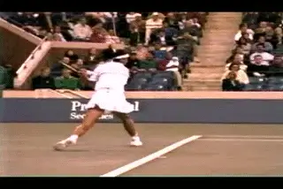
The spin rate on backhand slice returns reached as high as 3000rpm.
Underspin in the Women's Return Game
In addition to the returns hit with topspin, we also were able to record several women's returns hit with underspin. Jana Novotna hit 2 backhand returns that both registered underspin at 3000rpm, only slightly less than the underspin recorded on her slice backhand groundstroke. Two other slice returns also fell within the general spin range of the women's slice groundstroke.
Women's Slice Backhand Returns
Player: No. of Backhands: RPM Range: Avg RPM: Jana Novotna 2 --- 3000rpm
Anna Kournikova 1 --- 2308rpm
Mary Pierce 1 --- 1875rpm
Mary Jo Fernandez 2 (2H) 714-811rpm 763rpm
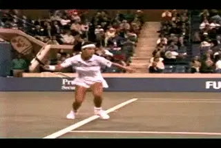
The spin rate on the forehand slice and slice returns fell into the same general range
In addition we recorded 2 forehand slice returns from Novotna, averaging slightly over 2000rpm. As with the slice groundstroke, the spin rate is probably due to the fact the ball approaching with topspin is returned spinning in essentially the same direction, requiring less racket head speed.
Women's Slice Forehand Returns
Player: No. of Forehands: RPM Range: Avg RPM: Jana Novotna 2 875-2143rpm 2009rpm
The Net Game
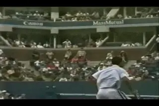
The "flattest" shot in pro tennis is probably the forehand volley.
Capturing spin data on the net game in pro tennis proved to be the most difficult. Serve and volley play is relatively rare in modern tennis played on hardcourts, such as at the Open.
Following the players' movement and maintaining the necessary camera framing to count the spin rates was also a challenge for our team when the players did go to net. In addition, many exchanges at the net ended without a clean volley, either with a passing shot from the opponent, or a missed passing shot, or a volley errors. All these factors reduced the number of incidents which we were able to measure.
Although our data included far fewer incidents, we still recorded about 30 examples of spin on the various net shots in the game, although the data here must be considered more tentative than on the groundstrokes and the serves.
The Forehand Volley
In the data we found that the forehand volley appears to be one of the "flatest" shots in tennis, and hit with relatively similar amounts of underspin by both men and women. For example, 3 forehand volleys from 3 different players on the men's side ranged from 600-882rpm. Seven forehand volley's from 5 players on the women's side ranged from 718 to 1250rpm, the highest being a forehand volley recorded by Martina Hingis at 1250rpm. The average underspin for the men was 772rpm, versus 846rpm for the women.
Men's Forehand Underspin Volleys
Player: No. of Volleys: RPM Range: Avg RPM: Tim Henman 1 --- 882rpm
Michael Chang 1 --- 833rpm
Andre Agassi 1 --- 600rpm
Women's Forehand Underspin Volleys
Player: No. of Volleys: RPM Range: Avg RPM: Martina Hingis 1 --- 1250rpm
Anna Kournikova 1 --- 882rpm
Irina Spirlea 1 --- 882rpm
Lindsay Davenport 1 --- 754rpm
Mary Jo Fernandez 3 Flat-1154rpm 718rpm
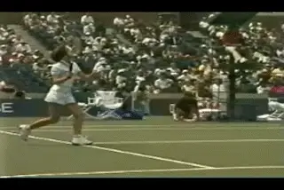
The swinging forehand volleys in the modern game can spin at 2500rpm.
In addition for the women's side we recorded 2 incidents of swinging forehand volleys, a shot once thought impossible, but pioneered in the pro game by Andre Agassi and now hit regularly by many players. Both swinging volleys were hit with substantial topspin, one by Anna Kournikova at 1500rpm, and the second by Martina Hingis at 2500rpm.
Women's Swinging Forehand Volleys (Topspin)
Player: No. of Volleys: RPM Range: Avg RPM: Martina Hingis 1 --- 2500rpm
Anna Kournikova 1 --- 1500rpm
The data showed that backhand volleys had significantly more underspin than on the forehand
The Backhand Volley
On the backhand volley, both men and women appear to hit with more underspin than on the forehand. Three underspin backhand volleys on the women's side, including 2 from Hingis, ranged from 1071 to 2143rpm, averaging just over 1600rpm.
For the men, 8 backhand volleys from 4 players ranged from 1200 to 2586 rpm and averaged slightly more than 1927rpm. This included 4 from Pete Sampras which averaged 1884rpm.
Men's Backhand Underspin Volleys
Player: No. of Volleys: RPM Range: Avg RPM: Mark Philippousis 1 --- 2308rpm
Michael Chang 2 1875-2500rpm 2188rpm
Pete Sampras 4 1200-2586rpm 1884rpm
Todd Martin 1 --- 1200rpm
Women's Backhand Underspin Volleys
Player: No. of Volleys: RPM Range: Avg RPM: Martina Hingis 2 1667-2143rpm 1905rpm
Mary Pierce 1 (2H) --- 1071rpm
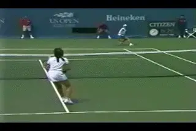
3 Hingis overheads averaged 1400rpm.
The Overhead
On the overhead, we recorded 4 incidents for the women averaging over 1200rpm, 3 of which were hit by Hingis. A single Michael Chang overhead on the men's side registered 1000rpm. In general we may conclude that although pro players generate substantial spin at the net, it is less than on the groundstrokes and on the serve. This conclusion makes obvious sense because of the far more abbreviated swing patterns at the net, as well as the lower velocity on the volleys compared to the other shots, as recorded in our ball speed experiments.
Women's Overhead
Player: No. of Overheads: RPM Range: Avg RPM: Martina Hingis 3 600-2308rpm 1424rpm
Mary Jo Fernandez 1 --- 681rpm
Men's Overhead
Player: No. of Volleys: RPM Range: Avg RPM: Michael Chang 1 --- 1000rpm
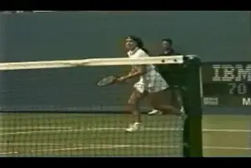
Like the underspin groundstrokes, drop shots hit with underspin had more total spin than most topspin groundstrokes.
The Drop Shot
Among the over 700 incidents of ball analyzed by the team were a half dozen drop shots and drop volleys. The results were consistent with the general perception that a key to the shot is the ability to hit with substantial underspin. The team recorded drop shots from Monica Seles, 2 backhands and a forehand, that averaged 2145rpm, substantially more spin than on her topspin groundstrokes that ranged from 1200 to 1300rpm.
On the men's side 5 drop shots form 4 different players ranged from a low of 1364rpm for a backhand drop volley from Tim Henman, to a high of 3000rpm on a Marcelo Rios backhand drop shot. The average was 2296rpm. The implication is that, as with the slice backhand, shots hit with underspin have similar spin rates in the men's and the women's games.
Women's Drop Shots (Underspin)
Player: Type: No. of Dropshots: RPM Range: Avg RPM: Monica Seles 2HBH 2 1500-3333rpm 2417rpm
Monica Seles 1HFH 3 1250-2500rpm 1964rpm
Mary Jo Fernandez FH 1 --- 1500rpm
Men's Drop Shots (Underspin)
Player: Type: No. of Dropshots: RPM Range: Avg RPM: Marcelo Rios BH; 1 --- 3000rpm
Michael Chang FH 1 --- 2830rpm
Michael Chang BHV 1 --- 2143rpm
Sergi Bruguera FH 1 --- 2143rpm
Tim Henman BHV 1 --- 1364rpm
The Bounce on the Court
One of the major sources of the heavy spin generated in pro tennis is actually completely unrelated to the players. This is the bounce of the ball on the court. This collision lasts only about 1/250 of a second, but radically alters the speed, direction, and spin on the tennis ball.
During the Open filming we were able to record over 60 incidents in which it was possible to measure the spin before the bounce and after the bounce, as well as the spin on the players hit that followed. The results showed how in general, the bounce added significant additional topspin to the flight of the shot.
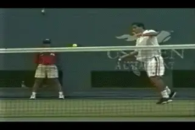
When the ball bounces on the court in pro tennis, it picks up around 200rpm of extra spin.
In the case of balls that approached the bounce with topspin, the results were quite similar for both the men and the women. In both cases the bounce added over 2000rpm of topspin to the shot. This included balls hit to players including Pete Sampras, Andre Agassi, Michael Chang, Venus Williams, Anna Kournikova, and Martina Hingis. For the men, 31 incidents averaged 1324rpm before the bounce, and 3355rpm after the bounce and before the hit. For the women, 21 incidents had an average spin of 995rpm before the bounce and 3129rpm after the bounce.
The data also showed that on average, the amount of spin on the ball after the bounce was actually much greater than that generated by the players themselves. We noted above that only Sergi Bruguera's forehand was hit with topspin in excess of 3000rpm, with the majority of players hitting far less average spin.
Our ball bounce data showed that, for the men, the average spin rate of 3355rpm after the bounce and before the hit was slightly faster than Bruguera's average forehand. Although the players were hitting a ball spinning over 3000rpm after the bounce, the actual spin they generated on their own outgoing shots was on average less than half than the oncoming spin, an average of 1619rpm. For the women, the ball after the bounce was spinning at an average rate 3129rpm before the hit. The average spin the women players generated after hitting this ball an average of 1128rpm.
Men: Oncoming Balls Spin Rates Before Bounce
Number of Avg RPM Before Avg RPM After Avg RPM On Incidents Bounce Bounce Hit 31 1324rpm 3355rpm 1619rpm
Average Spin Gained After Bounce: 2031
Average Spin Lost After Hit: 736
Women: Oncoming Balls Spin Rates Before Bounce
Number of Avg RPM Pre Bounce Avg RPM After Avg RPM On Hit
Incidents Bounce
21 995rpm 3129rpm 1128rpm
Average Spin Gained After Bounce: 2134
The results of this breakthrough study gave us a critical base in understanding the role of spin in the mysteries of the heavy ball. Inevitably, this work led to a new set of questions.
How do the components from our first two studies--speed and spin--combine to create the heavy ball?
If this study represented the total spin rates in pro tennis, and could be loosely categorized as "topspin" and "underspin" what were the actual spin components in the pro ball. It was apparent from visually examining the footage that many "topspin" groundstrokes had significant sidespin components. What were the exact interrelationships there? Similarly, it appeared there was no such thing as a pure "slice" serve or a pure "topspin" serve. All the pros serves seemed to be spinning with some combination of the two. But again, what combination?
The second major question had to do with the interrelationship between our first two studies. How did ball speed and spin mix and interact in the pro game? Did more speed always mean less spin? What effect did various combinations of speed and spin have on the so-called "heaviness" of the ball?
These questions required new more complex filming protocols and new methods of analysis. Stay tuned to see what happened when we set out to devise them and address our additional questions.

John Yandell is widely acknowledged as one of the leading videographers and students of the modern game of professional tennis. His high speed filming for Advanced Tennis and TPA have provided new visual resources that have changed the way the game is studied and understood by both players and coaches. He has done personal video analysis for hundreds of high level competitive players, including Justine Henin-Hardenne, Taylor Dent and John McEnroe, among others.
In addition to his role as Editor of TPA he is the author of the critically acclaimed book Visual Tennis. The John Yandell Tennis School is located in San Francisco, California.
← Read | Advanced Tennis Index | Read →